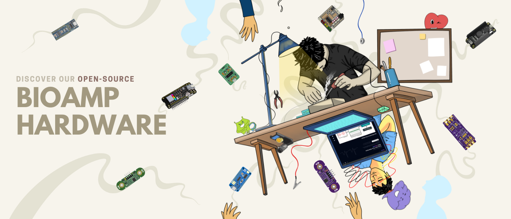
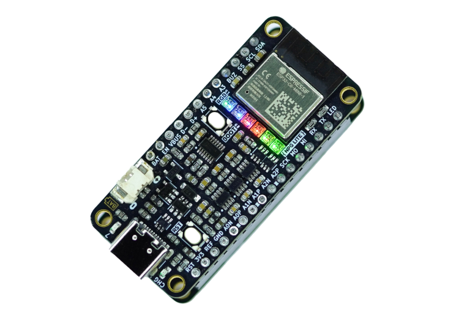
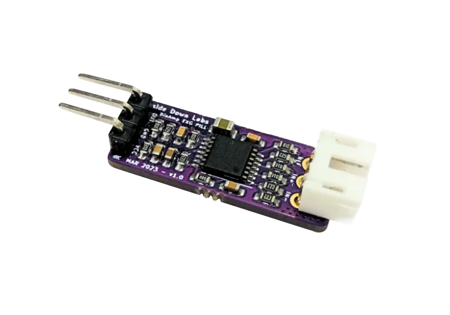
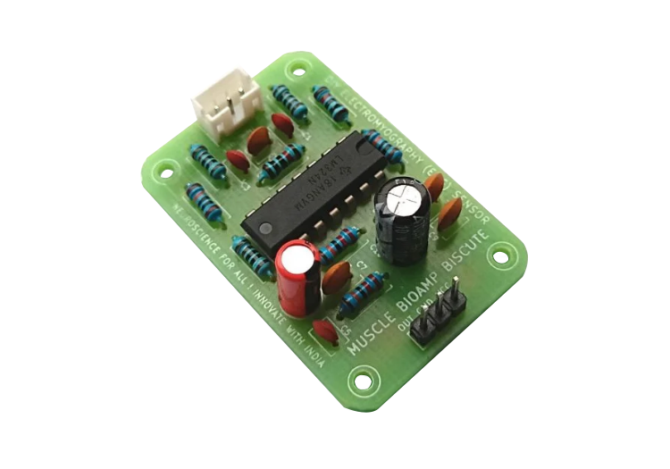
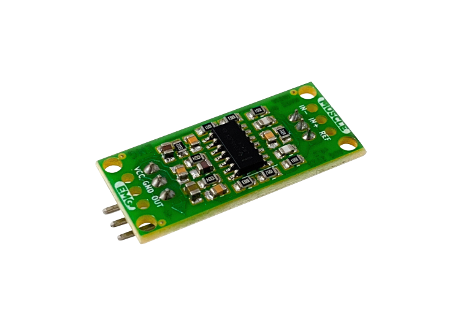
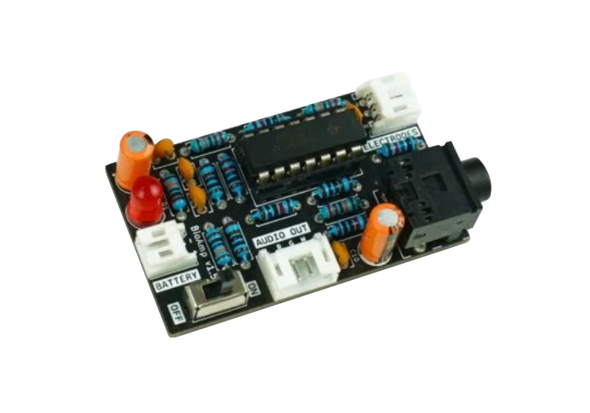
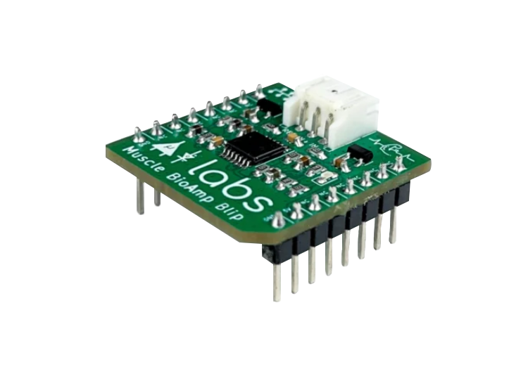
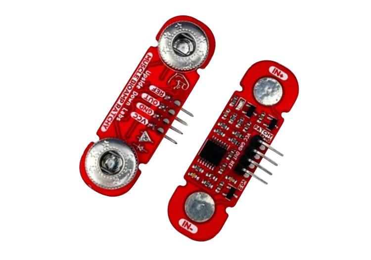
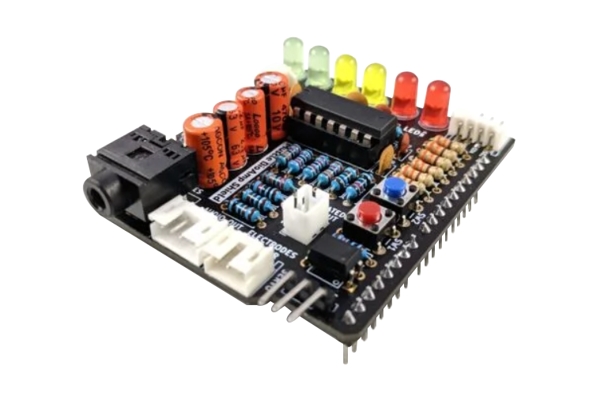

Upside Down Labs Documentation#

Selamat datang di Situs Dokumen Ideas Edvolution Technologi!
Kami senang Anda berada di sini menjelajahi dunia menarik neurosains. Platform kami didedikasikan untuk memberikan Anda sumber daya komprehensif tentang perangkat keras BioAmp open-source kami. Jadi apakah Anda seorang peneliti berpengalaman, penggemar yang penasaran, atau seorang inovator yang sedang berkembang, Anda telah datang ke tempat yang tepat. Di halaman-halaman ini, Anda akan menemukan informasi, panduan, dan wawasan terperinci untuk membantu Anda memahami dan memanfaatkan perangkat keras bioamp secara efektif, sehingga memungkinkan Anda untuk membangun proyek Antarmuka Manusia-Komputer (HCI) atau Antarmuka Otak-Komputer (BCI) dengan mudah.
Gambaran Umum Perangkat Keras BioAmp#
Temukan perangkat keras BioAmp sumber terbuka kami, yang dirancang untuk membantu Anda merekam sinyal biopotensial dari tubuh dengan mudah, sehingga memudahkan eksplorasi bidang ilmu saraf dan elektrofisiologi. Kami menyediakan panduan yang mudah diikuti yang memandu Anda melalui proses pengaturan langkah demi langkah, sehingga mudah bagi pemula untuk memulai. Anda juga dapat menemukan contoh perangkat lunak di profil GitHub kami yang bekerja dengan lancar dengan perangkat keras kami.
Produk BioAmp#

Neuro PlayGround Lite

BioAmp EXG Pill

Muscle BioAmp Biscute

Muscle BioAmp Candy

BioAmp V1.5

Muscle BioAmp Blip

Muscle BioAmp Patchy

Muscle BioAmp Shield
Dokumentasi#
📦 Hardware
Dokumentasi perangkat dan spesifikasi BioAmp.
💻 Software
Library, contoh kode, dan tools pendukung.
📚 Research
Referensi, riset, dan publikasi terkait.
🧭 Guides
Tutorial langkah demi langkah untuk pemula.